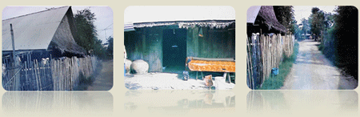
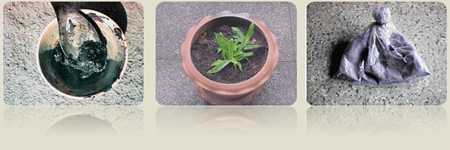
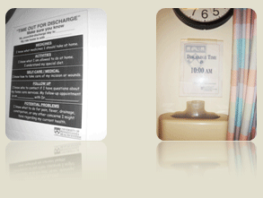

Center of Recovery Management (CRM)
This center includes recovery management in 5 major areas and population:
- Patients and their families during surgery.
- Patients and their families before surgery.
- Patients and their families after surgery.
- High risk people.
- Professional nurses.
The CRM center plan includes the development of databases, books and articles which related to recovery management, research studies involving the recovery management, new interventions used in practice and education.
Our Aims of the Center
- Communicate and exchange advancing knowledge and experiences of the educators and health care professionals in recovery management.
- Develop the resources of recovery management such as databases for research studies, practice and experts in recovery management.
- Promote widespread research studies including basic science, and applied science to develop the recovery management knowledge to adopt this research-based model of care in each settings.
- Increase faculties’ expertise in recovery management including researchers and educators.
- Be the source of consulting including research, practice and education related to recovery management.
Research Experiences
The central theme of research studies is recovery management including symptom management, health promotion, continuing care and health care model.

Research and nursing service related to “Discharge planning in Coronary Artery Bypass Graft” by Assist.Prof. Dr. Usavadee Asdornwised, Assoc. Prof. Dr. Punsuk with Team from cardiac surgical ward.
1. Discharge Planning with team at nursing services & 2. Home visit

3. Complementary uses in CABG patients

4. Telephone follow-up & 5. Experience Discharge planning in USA
